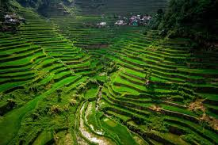
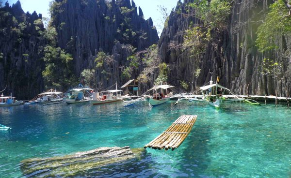
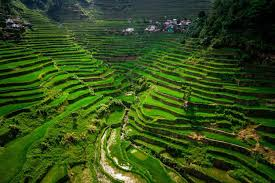
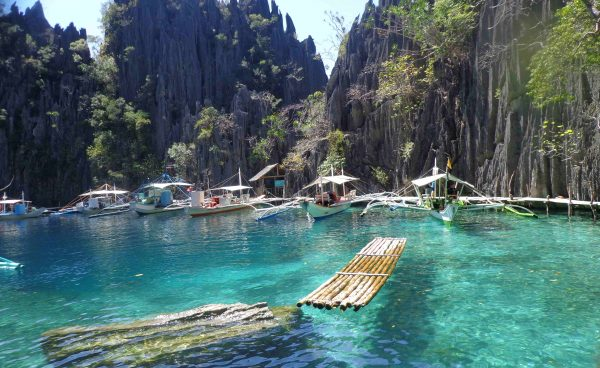

Philippines
 




The Philippines is my home. If you’re planning to skip this country entirely, then you’re missing out on a lot! The Philippines is where you can find some of the best beaches in the World. Made up of over 7,500 islands, there is a ton of things to see and do here worth a spot on your bucketlist, from enjoying popular holiday destinations to discovering places off the beaten path. What sets the Philippines apart from the rest of Asia is its distinct culture, shaped by Spanish, American, and native influences. Bias aside, one of the best things I love about traveling in the Philippines is how easy it is to have interactions with locals. Getting around isn’t much of a problem since most Filipinos can understand English and are very friendly. Breaking down the language barrier makes travel more fun in the Philippines.
How to go
Manila is the main flight hub in the Philippines. Manila-NAIA International Airport serves direct flights from major cities in Asia, Australia, USA, Canada. An excellent alternative is to fly direct to the Philippines’ secondary international gateways including Cebu, Puerto Princesa (Palawan), Iloilo, Davao, Kalibo & Clark.